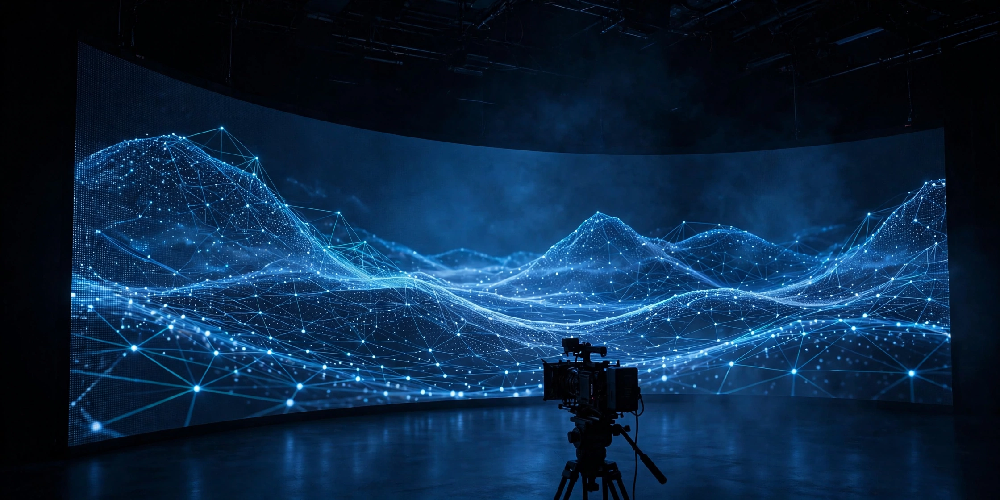

Ovia Inc — Articles
From Volume to Intelligence: Virtual Production in the Age of Real-Time AI

Some skills come full circle. Team roots reach back to sound design at TREBAS (1999–2001) and a technical internship at MELS, Cité du Cinéma in Montréal (2001–2002).
Today, virtual production sits at the centre of modern film production — LED volumes, real-time environments, Unreal Engine. The stage renders the world while the camera rolls, and the craft of a clean signal matters more than ever.
Virtual Production now sits proudly on the team skill set, next to artificial intelligence and machine learning. Sound, image and real-time systems were never separate trades — the volume simply brings them together on one stage.
Old craft. New stage. Same obsession with a clean signal.